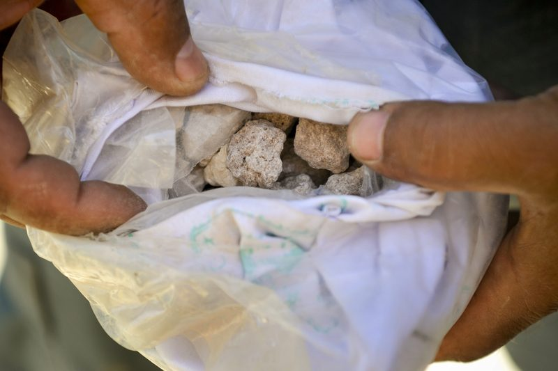

तुर्किए से भारत लाया गया ड्रग किंगपिन नवप्रीत सिंह, गृहमंत्री अमित शाह ने क्या-क्या बताया

जब्त हेरोइन की खेप — अफगानिस्तान से भारत तक ड्रग तस्करी सिंडिकेट का भंडाफोड़
भारत सरकार ने अंतरराष्ट्रीय ड्रग तस्करी सिंडिकेट के सरगना नवप्रीत सिंह को तुर्किये से भारत वापस लाने में सफलता हासिल की है. केंद्रीय गृह मंत्री अमित शाह ने बताया कि भारतीय एजेंसियों ने फर्जी पहचान और तुर्किये की नागरिकता का इस्तेमाल कर रहे नवप्रीत सिंह को ट्रैक किया और उसकी वास्तविक पहचान का पता लगाने के बाद उसे भारत लाया गया. उस पर ड्रग तस्करी समेत कई आपराधिक मामलों में कार्रवाई की जा रही है. गृहमंत्री अमित शाह के मुताबिक, नवप्रीत सिंह ने नवाब वीरक नाम की फर्जी पहचान के जरिए तुर्किये की नागरिकता हासिल की थी. आरोप है कि इसके बाद भी वह अफगानिस्तान से भारत में हेरोइन और मेथामफेटामाइन की तस्करी करता रहा. भारतीय एजेंसियों ने उसकी तलाश के दौरान उसकी असली पहचान का पता लगाया और इसके बाद उसे तुर्किये से भारत वापस लाया गया. भारत पहुंचने के बाद उसे ड्रग तस्करी और अन्य कथित अपराधों से जुड़े मामलों मे